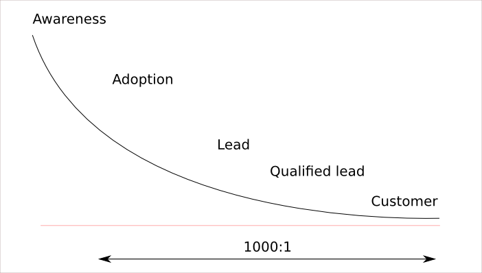
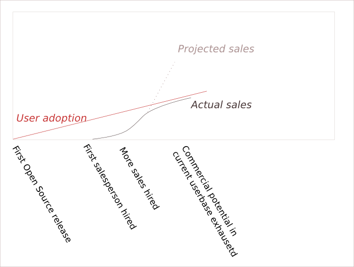
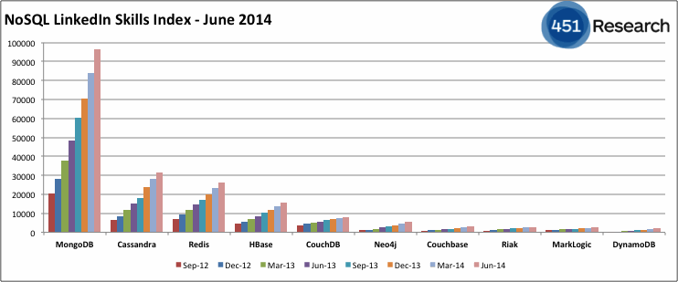
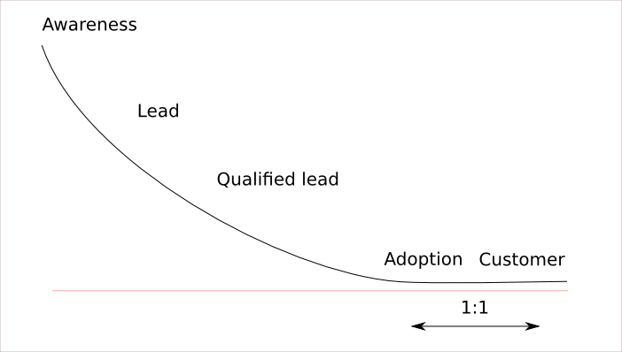

Author: Henrik Ingo, 2015. Please share and reuse this presentation using the Creative Commons Attribution License.
Selling Open Source 101
Henrik Ingo, MongoDB
Oscon 2015

Sales funnel
Awareness
- Marketing & PR departments
- Organic: Linux, Apache, Perl, Drupal
- Both of the above: Community Marketing
Adoption
- Someone starts using your product
- Pre-condition to paying for product
Lead
- A person
- And a contact: email, phone
- Some likelihood of becoming a customer
They are aware of your product,
and you are aware of them!
Qualified Lead (BANT)
| Budget | Authority |
| Need | Timeline |
Customer
- 1:1000 of users
convert to paying customer
2 Ecosystems
| Single vendor | Multi vendor |
| (MongoDB, MySQL) | (Linux, Hadoop, OpenStack) |
| Adoption | Adoption |
| Convince to pay | Convince to pay |
| Convince to pay YOU |
Multi-vendor ecosystems
- Bigger adoption / ubiqutious
- Competition among vendors
- Shared R&D cost
Other business models
- Android: customer pays for the phone
- Cloud/aaS: customer pays for HW, electricity, sysadmins...
Growing your business
Your Open Source Business Model
- Adoption x Conversion ratio = Revenue
Improve conversion ratio
- Increase nr of units sold per customer
- Increase price (minus churn)
- Hire more sales & marketing
- Closed source features
- New customer segments
- Lead qualification -> sales efficiency
- Find more leads
Lead Qualification Heuristics
- Mission Critical
- Using Microsoft, Oracle, IBM software
- Using RHEL, MySQL, Cloudera
- Policy / Legal
- Large use cases
- Low competence
- Closed source features
- Charity
What can we achieve?
- 1:1000
- 2x improvement possible
- More if price increase possible
- 1% - 10% conversion rate? No.
Increase adoption
- More marketing
- Better product!
- New customer segments
- 100x increase very possible!
Metrics!
Why are metrics important?
How do you measure this?
How do you measure...?
- Sales, Qualified leads, Leads: CRM
- Adoption??? Proxy measures: Downloads, Linkedin, Job openings
- Awareness: Press mentions, Google trends, social media, db-engines ranking
Example
Conclusion
Adoption is your most important metric,
and it is the most difficult one to measure!
Compare with Traditional Proprietary Software Sales Process
Traditional (proprietary) sales funnel
Proprietary |
vs | Open Source | |
| Sales effort to convince someone to | use | pay | |
| Sales cycle | long, expensive | short, efficient | |
| Price is a function of | migration cost (lock in) |
value |
Side note
- In Open Source migrations "never" happen due to pricing. If customers are migrating away, you have a product problem!
Conclusion
In Open Source...
- Conversion ratio is tiny
- Prices are low
This must be offset by
- Massive adoption
- Efficient sales cycle
- Shared R&D investment
Thanks
To my boss Joe Morrisey from both MySQL & MongoDB
for inspiring me to think these thoughts
and for encouraging me to write them down.
Image credits
- Attractive Chinese Woman Selling Sweet Jelly
CC BY: https://www.flickr.com/photos/epsos/6891884103/ - Henrik Ingo portrait on white bakground:
Julian Cash - Logos of their respective owners:
Open Source Initiative, MySQL, Drupal, MongoDB